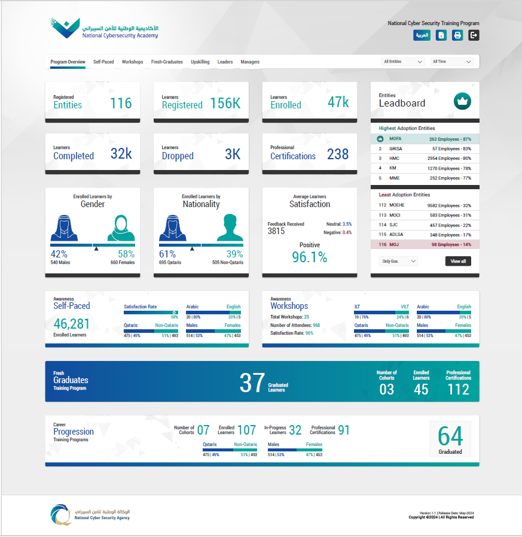

Transforming complex data into actionable business insights
through analytics, data modeling and modern data platforms.
Power BI · DAX · SQL · Python · Microsoft Fabric
About Me
Data & AI Consultant specializing in Power BI development,
ITSM analytics, data modeling, KPI reporting and data
engineering. Experienced in translating business requirements
into meaningful dashboards and scalable analytical solutions.
Healthcare ITSM Analytics – HMC
Power BI analytics for healthcare IT service management,
featuring SLA compliance, incident lifecycle analysis,
backlog monitoring and service performance KPIs.
Power BI · DAX · Semantic Models · Star Schema · ITSM
Designed and implemented a Power BI reporting solution for
the National Cyber Security Agency (NCSA), Qatar, to analyze
training programs, workshops and course participation across
employees, partner organizations and entities.
Key Contributions
Built a data warehouse integrating Moodle PostgreSQL source data.
Developed SSIS ETL packages with incremental loading logic.
Created Power BI dashboards for registration, enrollment,
course completion, certifications and learner feedback.
Enabled training analysis across entities and partner organizations.
Validated source queries and supported deployment across
Development, Staging and Production environments.
Tested the Jump VM, database server and required software components.
Power BI · SSIS · PostgreSQL · SQL · Data Warehouse · ETL

The dashboard screenshot uses dummy data for portfolio demonstration purposes. It does not represent actual NCSA employee, partner, or training records.
Microsoft Fabric Data Warehouse
Demonstrate Bronze, Silver and Gold layers, ETL pipelines,
metadata-driven ingestion and dimensional modeling.
Developed an interactive Power BI proof of concept to demonstrate sales analytics and reporting capabilities for McDonald's Saudi Arabia, using dummy data for demonstration purposes.
The solution includes sales performance by location and order type, discount analysis, product category insights, sales channels,
and transaction-level details. Interactive features include drill-down, drill-through, bookmarks, a toggle between sales and orders views,
map-based location analysis, and Power BI Q&A for natural-language exploration.
Power BI · DAX · Drill-through · Bookmarks · Q&A
Interactive Power BI sales analytics proof of concept.
Demonstration uses dummy data.
Client POCs & Demonstrations
Interactive Power BI proof of concepts demonstrating
sales analytics, data storytelling, geographic analysis,
and advanced report navigation using sample data.
Power BI · DAX · Bookmarks · Drill-through · Data Storytelling